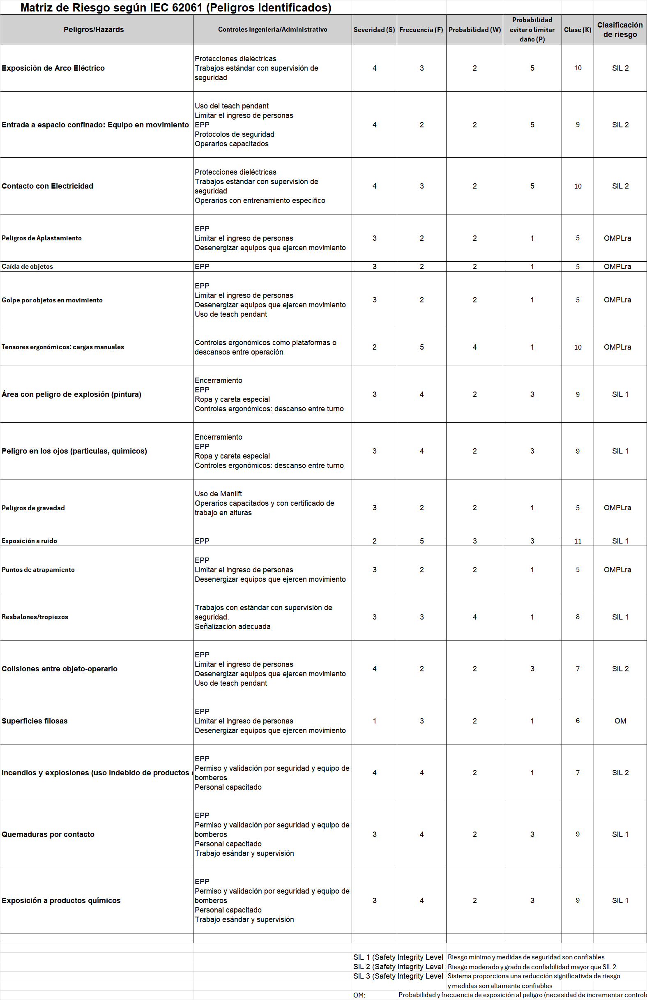

1. Gestión de producción
1.1 Análisis de la planta
Planta previo a la automatización
En el siguiente video se puede observar el estado de la planta de fabricación previo a la automatización.

A continuación se podrá encontrar el video de la simulación de la planta de fabricación (primera propuesta).

Como resultado de la simulación se obtiene la siguiente gráfica de eficiencia
1.2.1.1 VSM pre automatizado
En la siguiente figura se ve el VSM para la producción de la planta previo a la automatización

1.2.1.2 VSM pos automatizado
Por otro lado, a continuación se muestra el VSM para la producción de la planta con la implementación de la automatización

1.2.1.3 KPI's planteados
La información correspondiente se encuentra dentro de la carpeta: 1.1
Gestión de Producción
A continuación se muestra una breve descripción de los KPI's planteados
%
Producción diaria Se pretende obtener un 42.86% de aumento en la producción
%
Eficiencia económica Ahorro de recursos esperado al implementar la
automatización
%
Takt Time De la misma manera como en producción diaría, un 42.86% de
eficiencia es la meta de Takt Time.
%
OEE Se espera un aumento en este indicador de entre un 41% y un 45%
dependiendo el tamaño de la baldosa
Se tuvieron las siguientes consideraciones:
- Las etapas a automatizar se asumen son hechas por personal.
- La disponibilidad y demás tiempos se aplican de la misma manera a los 3 productos.
A continuación se muestra una breve descripción de los KPI's planteados
%
Producción diaria Se pretende obtener un 42.86% de aumento en la producción
%
Eficiencia económica Ahorro de recursos esperado al implementar la automatización
%
Takt Time De la misma manera como en producción diaría, un 42.86% de eficiencia es la meta de Takt Time.
%
OEE Se espera un aumento en este indicador de entre un 41% y un 45% dependiendo el tamaño de la baldosa
Se tuvieron las siguientes consideraciones:
- Las etapas a automatizar se asumen son hechas por personal.
- La disponibilidad y demás tiempos se aplican de la misma manera a los 3 productos.
2. Módulo de industria 4.0
2.1 Propuesta de Arquitectura de Red
En la imagen de la izquierda se puede ver el diagrama de la arquitectura de Red propuesta para la implementación de la planta automatizada.
Como propuesta de arquitectura de red se pretende hacer una integración con las herramientas vistas en clase, para la celda robotizada se tiene una propuesta que conecta toda la suite de ABB para el control del robot así como la conexión a NX para los demás sensores y actuadoes.
Las líneas rojas representan los protocolos de comunicación estándar, tales como análogo por corriente o voltaje, RS232 y MODBUS. Que suelen ser los protocolos utilizados por los sensores comunmente.
En la etapa superior se propone un protocolo de comunicación TCP/IP, protocolo que puede implementarse para conectar sistemas de alto nivel a la nube y demás interfaces en tiempo real.
Para los demás sistemas en los que no se implementarán celdas robotizadas el cambio radica en la ausencia del controlador robótico, la integración será similar y la agrupación de PLC's se dividirá de la siguiente manera:
2.2 Implementación de IoT
- Información de estado de procesos (inicio y fin) a los supervisores de sección.
- Envío de datos de falla a los supervisores y trabajadores de sección.
- Reanudar y pausar los procesos de manera remota.
- Registro central de los estados de los procesos.
3. Planeación del Proyecto (7 Pasos y Cronograma)
En las imágenes a continuación se observa el proceso de planeación del proyecto
4. Evaluación económica del proyecto
Business Model Canvas
Inicialmente se propone el siguiene Business Model Canvas para la empresa que constituimos para el proyecto:

4.1. Excel con indicadores financieros completado.

4.1.1. VPN y 1.4.1.2. TIR calculados.

4.1.3. Payback calculado.


4.2. Oferta comercial escrita.
El proyecto no generará ganancias durante los primeros cuatro meses de operación. Durante este tiempo se llevarán a cabo modificaciones, se contratarán y pagarán los salarios de los ingenieros encargados y se iniciará la infraestructura requerida. Se espera que la planta esté paralizada durante los meses 3 y 4, lo que aumentará las pérdidas de producción.
El proyecto tiene un costo de inversión estimado de $1.309.477.253 COP, que incluye gastos de interrupción de producción, maquinaria, robots, servicios y software, entre otros.
Sin embargo, los indicadores financieros indican que el proyecto es viable a pesar de estos obstáculos iniciales, con un Valor Actual Neto (VAN) de $228.810.238 respecto a la inversión total y una Tasa Interna de Retorno (TIR) del 10%. Además, se estima que el período de recuperación de la inversión (payback) durará 18 meses.
El beneficio de Chía Dynamics en un proyecto de este estilo es del 23,22% del costo del total del proyecto, lo equivalente a 246.802.466 COP.
5. Análisis de riesgo y peligros
La información correspondiente se encuentra dentro de la carpeta:
Contenido de módulo de celda de manufactura robotizada completado
A continuación se puede ver el análisis de riesgos realizado

6. Simulación en Siemens NX
Primera propuesta en NX con Layout provisional
A continuación se da una muestra del arreglo de la fábrica automatizada realizado en el software Siemens NX
Inicialmente se tiene un layout funcional en simulación con el fin de probar cada parte del plan de
automatización desarrollado en cada máquina, es por esta razón que se tiene un ejemplar de cada sistema,
una
vez definida la producción individual por máquina se hará el ajuste numérico.
La planta cuenta con las siguientes máquinas:
- Silo con la mezcla ya preparada
- Prensa
- Volteadora de baldosas
- Secadora
- Horno
- Máquina de pintado
- Qualitron
- Clasificador
- Apiladora de baldosas / empaquetadora
- Silo con la mezcla ya preparada
- Prensa
- Volteadora de baldosas
- Secadora
- Horno
- Máquina de pintado
- Qualitron
- Clasificador
- Apiladora de baldosas / empaquetadora
Siendo estos los procesos automatizables dentro de la fábrica.
Propuesta inicial de automatización
Se seleccionaron la impresion de patrones, el proceso de calidad del producto y el embalaje como los procesos a automatizar. Luego de investigar respecto a soluciones similares en la industria, se llegaorn a las siguientes conclusiones:
Impresion de patrones
Implentacion de máquina impresora de patrones, se pidió cotización pero aun se espera respuesta, por lo que las maquinas entre las opciones a elegir son:
Calidad del producto
Para la etapa de calidad se busca implementar en la linea de producción un Qualitron. Nuevamente debido a que no han llegado las cotizaciones y no todas las caracteristicas de las máquinas pueden hallarse, entre las posibles opciones se tienen:
Embalaje de cajas
El proceso de embalaje de cajas se dividirá en 2 fases distintas. Esto contemplara el proceso desde el armado de la caja y la disposición de las baldosas hasta su cobertura de vinipel:
-
Doblado y posicionamiento de las baldosas: Las baldosas serán posicionadas previamente en grupos de
a 5
las
cuales entrarán a una empaquetadora que cumple la doble tarea de plegar la caja a la vez que las
baldosas
quedan correctamente colocadas en su interior.
-
Posicionamiento de las cajas: Las cajas se ubican de acuerdo con la distribución definida para el
transporte
de las baldosas esta tarea será realizada por un sistema robotizado para reducir tiempos.
La celda robotizada se diseñó de la siguiente manera: